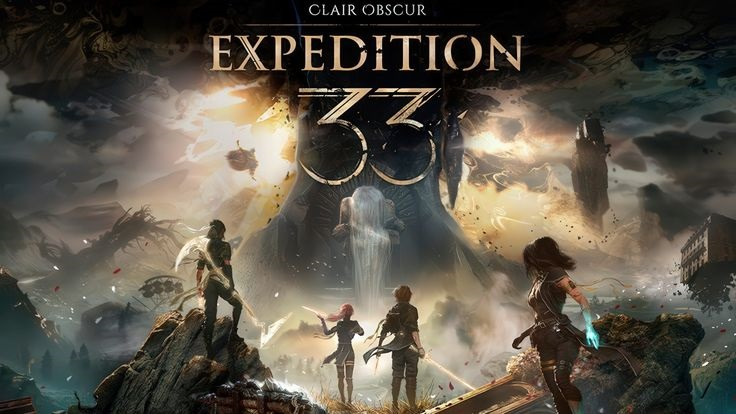

Expeditions: A Historical Strategy RPG
Posted on: March 26, 2026
The Expeditions series is critically appreciated video game series that combines history, strategy, and role playing into immersive experience. Unlike fast-paced action games, this series focuses on decision-making, leadership, and exploration, where players lead a group on dangerous expeditions across historically inspired worlds.
In this series, you don't just fight enemies-you actually build a team, manage resources, makes political choices, and shape your own story. Every decision you take can change the outcome of the game, including relationships with characters and the fate of entire regions. This makes the gameplay feel realistic and engaging, especially for players who enjoy thoughtful and strategic gaming.
Another major strength of the Expeditions series is its historical setting. Each game is based on a different era of history, allowing players to experience various cultures and time periods. From the Age of Exploration to Viking era and the Roman Republic, the series provides a unique mix of education and entertainment.
Gameplay Overview
The gameolay in the Expeditions series is mainly based on turn-based tactical combact combined with exploration and storytelling. Players move their characters on a grid-based battelfield, carefully planning each move to defeat enemies. However, combat is only one part of the experience.
players must also:- Manage food, supplies, and team morale
- Interact with different characters and factions
- Make choices that impact the story
- Explore unknown land and complete missons
This mix of strategy and storytelling makes the game feel more like a journey rather than just series of battels.

Key Features:
- Historical setting based on real-world events
- Turns-based tactical combat system
- Strong story with meaningful player choices
- Resource managment and survival mechanics
- Characters relationship and team building
- Multiple endings based on decisions
Graphics & Visuals
- Realistic and historically inspired environments
- Detailed character designs and armor styles
- Cinematic battel presentation
- Smooth animations and camera angles
- Immersive atmoshpere reflecting each time perion